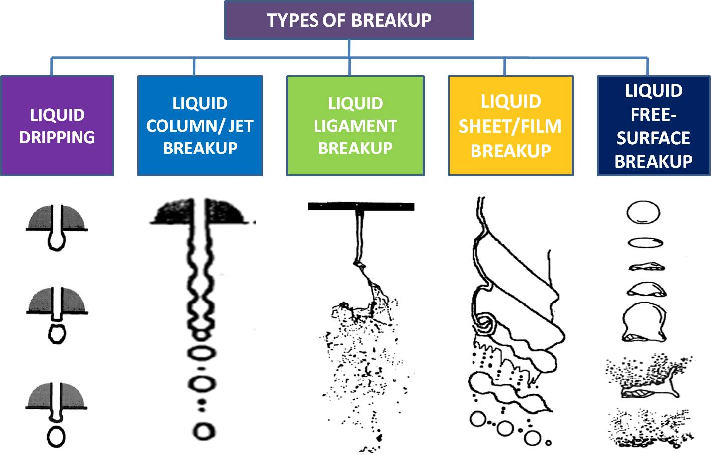
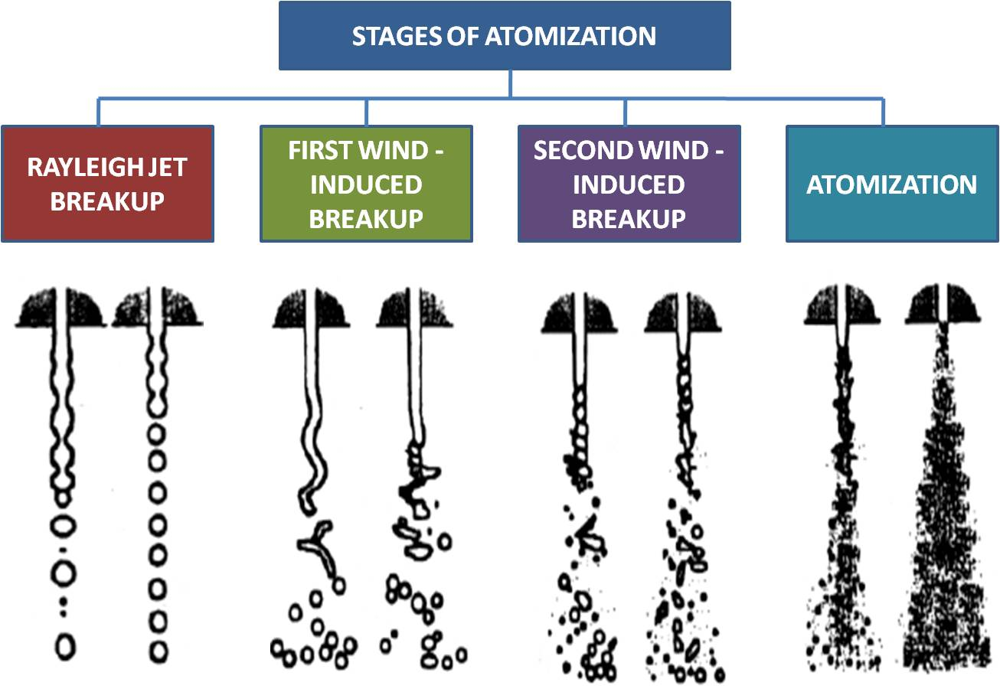
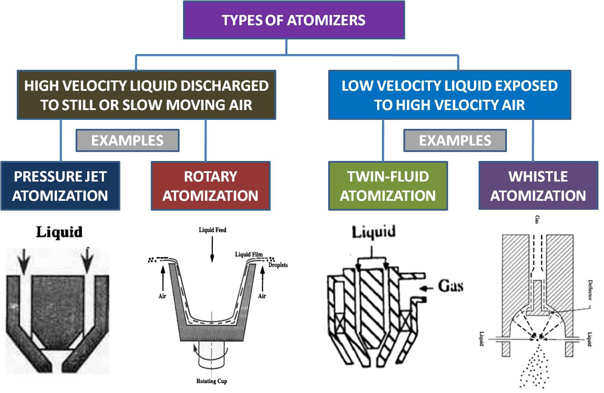
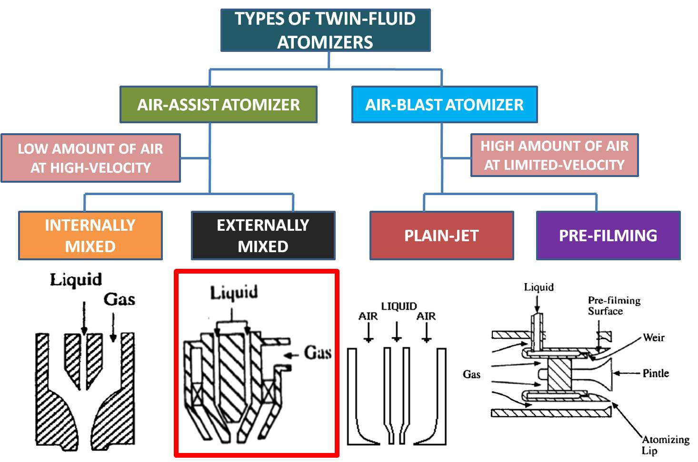
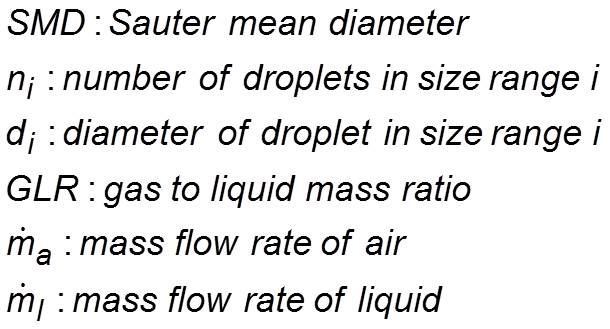
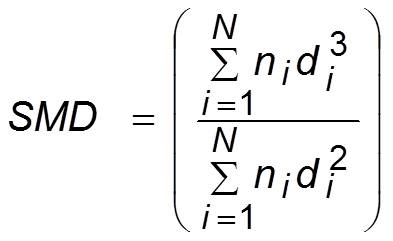
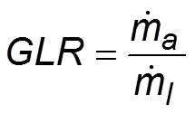

Home
About Us
List Of Experiments
Contact Us
Feedback
Expt 9: Measurement of Droplet Size for an Air-Assist Atomizer
Aim
Intro
Theory
About Exp
Results
Conclusions
FAQs
References
Elements of atomization


Atomizer classification


Air-assist atomizer
Twin-fluid spray nozzle that employs air along with liquid for obtaining spray.
Advantages of air-assist atomizer
Simple design.
Produces nearly homogeneous spray.
Fine droplets can be produced at low liquid injection pressures.
Ensures thorough mixing of air and droplets.
Very low soot production during combustion; reduction in flame radiation and exhaust smoke.
Some definitions

Sauter Mean Diameter (
SMD
)

Gas-to-liquid ratio (
GLR
)

Importance of SMD
: Consumption of reactant mass is a volumetric process and evaporation is a surface phenomenon.
© Virtual Combustion and Atomization Lab, IIT Kanpur